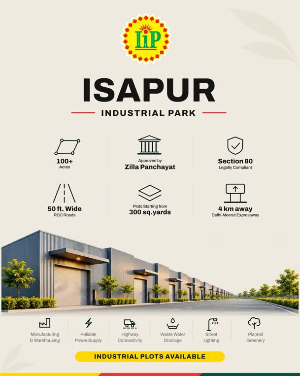
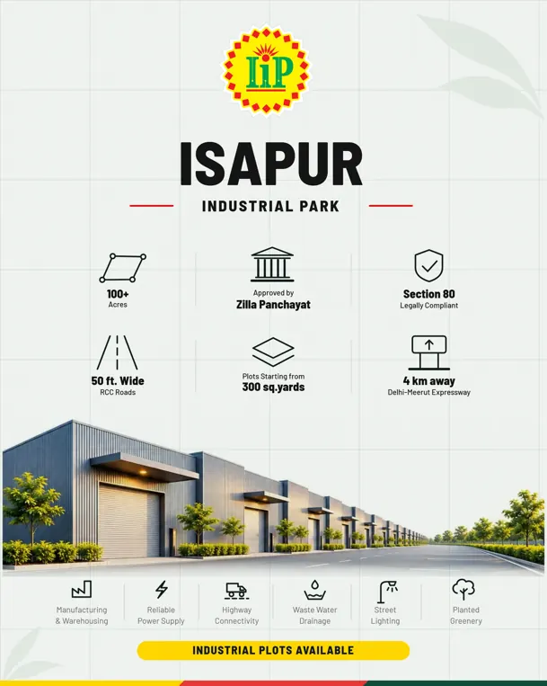
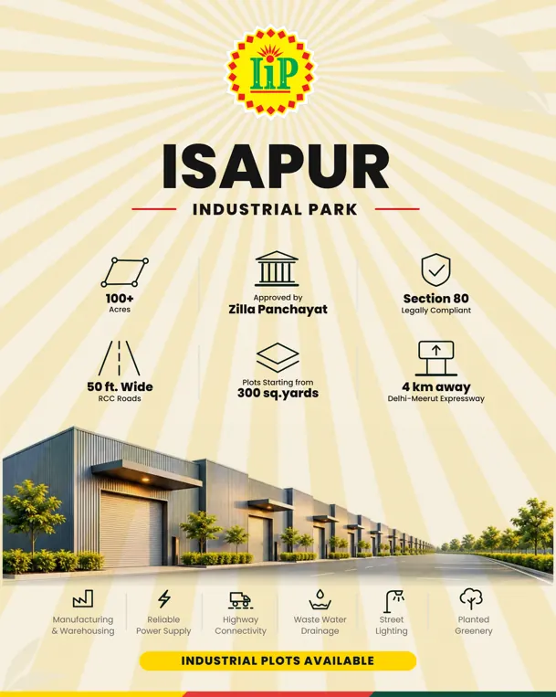
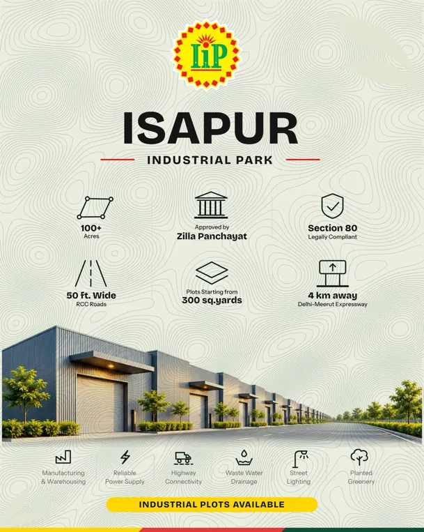
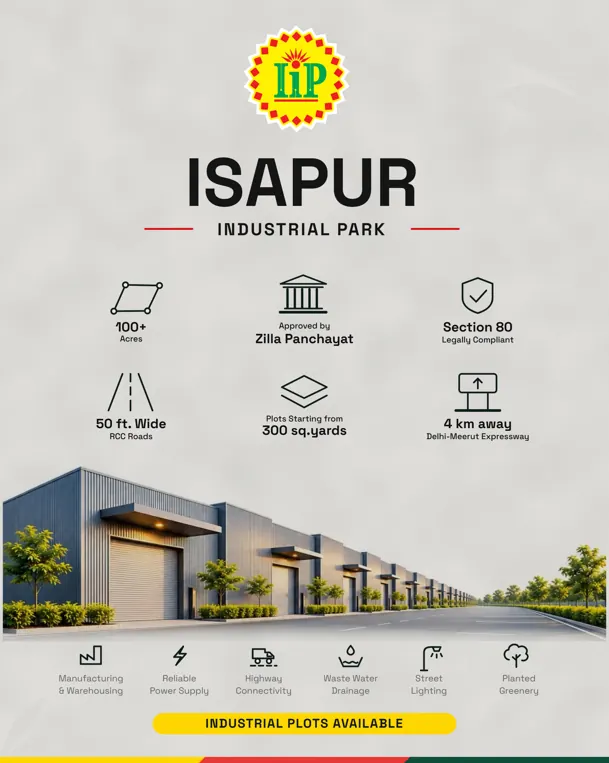
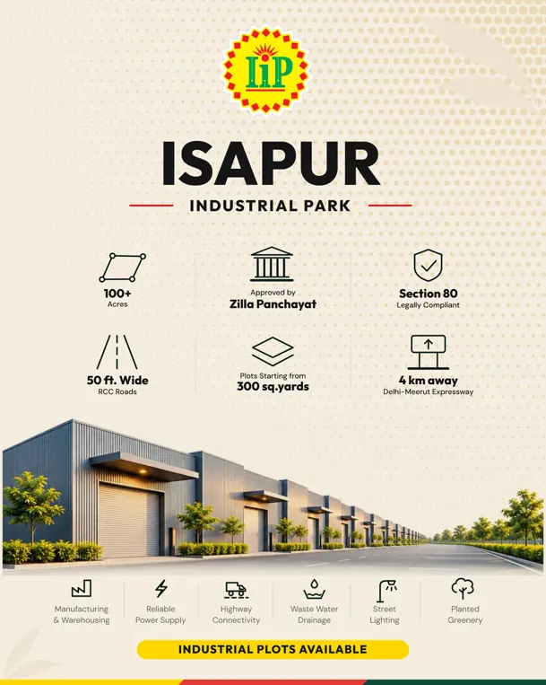
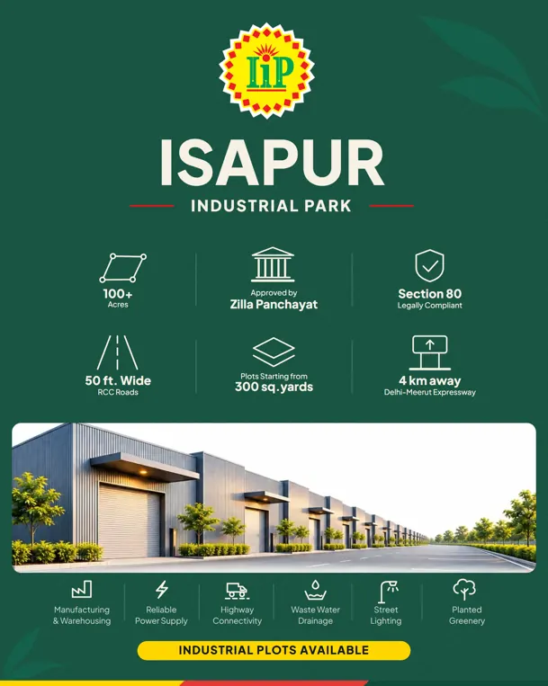
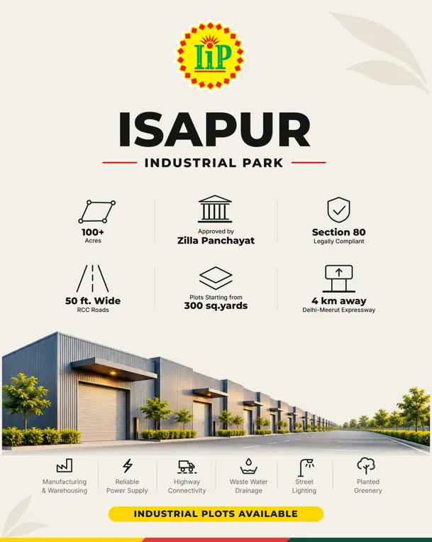
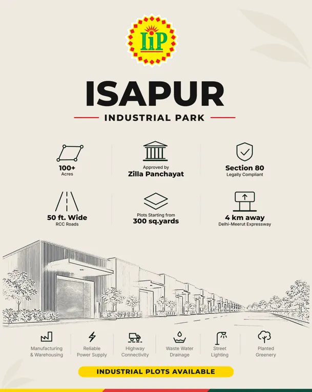
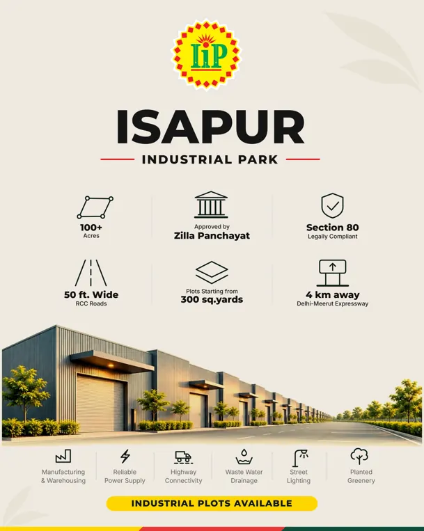

IIP poster lab
Same layout and same text as the final poster. Only the font, background texture and background colour change. Pure white is replaced by warm or tinted bases, and the photo is multiplied into the base so it never sits in a white box. The final poster is untouched.
Fonts, textures and colours

Warm bone base with fine paper grain. The calmest step away from pure white.
SVG PNG


Pale sage with an engineer's hairline grid (60 px minor, 300 px major). Says plots, survey, plan.
SVG PNG


The badge's sunburst repeated as faint rays across the whole poster. Ties everything to the logo.
SVG PNG


Topographic contour lines: land, plots, terrain. Hand-drawn feel that templates rarely have.
SVG PNG


Cool concrete grey with coarse mottling plus fine grain. Industrial, honest, a little brutalist.
SVG PNG


Print-style halftone dots fading from the top right corner in warm amber. Poster-shop energy.
SVG PNG


Brand green as the whole canvas, cream text. Boldest option; the photo sits as a clean window.
SVG PNG

Soft cream to sand gradient with a touch of grain. Quiet and premium.
SVG PNG


Same Montserrat and Inter as the final, only the bone colour. Shows what the background alone changes.
SVG PNG

Image experiments
Same bone paper background and same Montserrat and Inter as the final, only the hero picture changes. Cards starting with "AI" are AI generated concepts, not photos of the park. Real site photos replace any of these once the shoot happens.

Same render turned into brand green and white. Looks printed, ties to the badge green.
SVG PNG

Same render as fine charcoal linework. Plan and drawing feel, very distinctive.
SVG PNG


Same render in greyscale. Lets the yellow badge and CTA carry the colour.
SVG PNG

The supplied render, on bone paper. Baseline for the image tests.
SVG PNG

Same render graded warm, like late afternoon light.
SVG PNG


AI generated concept: isometric plot layout.
SVG PNG

AI generated concept: architectural line drawing.
SVG PNG

AI generated concept: flat vector style in brand colours.
SVG PNG

AI generated concept: warm golden hour version of the scene.
SVG PNG
How to read this
- Tap a poster for the full size PNG. SVG files open in a browser or vector app (fonts load from Google Fonts).
- Badge, text, icons and CTA are identical in every card. The brand colours (yellow, red, green) and the thin flag are unchanged.
- Card 09 is the control: the original Montserrat and Inter on bone only, so you can judge what the background alone does.
- Card 07 is the boldest: brand green canvas, cream text, photo as a rounded window.
- Any pick would still need a print test: textures and tints print differently from screens.
References
- Fareham Industrial Park (type-led industrial identity)
- Humber Enterprise Park (branding from site heritage)
- Crosspoint brand launch (standing out among industrial parks)
- Foundry Geelong (commercial property brochure)
- Refero style references (bone #f0eeeb, warns against pure white)
- Neo minimalism reference (paper grain at 2 to 5 percent)
- Fonts for construction and engineering (Barlow, Anton)
- Google font pairings 2026 (Archivo, Space Grotesk, Bricolage)